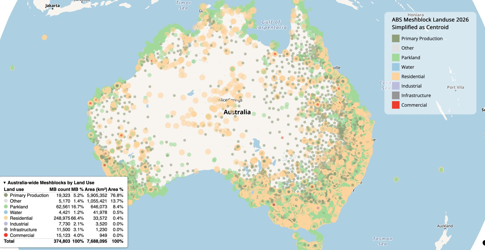
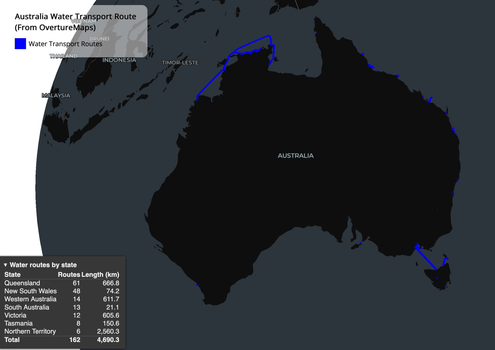
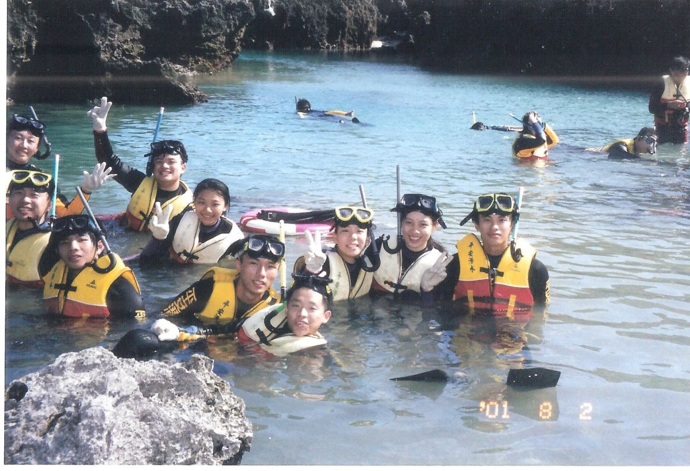
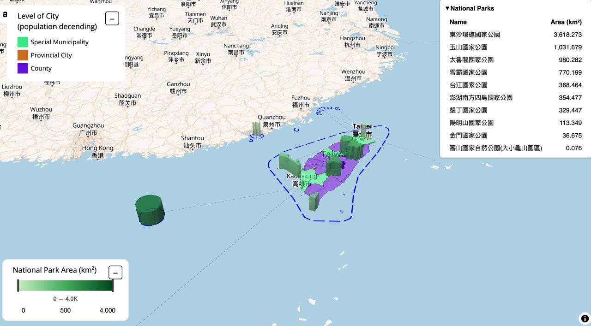
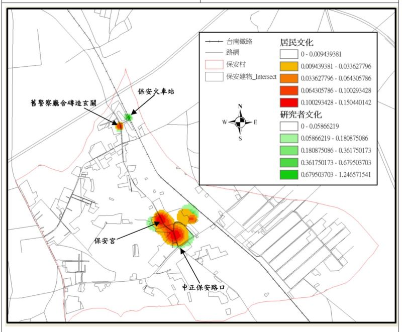
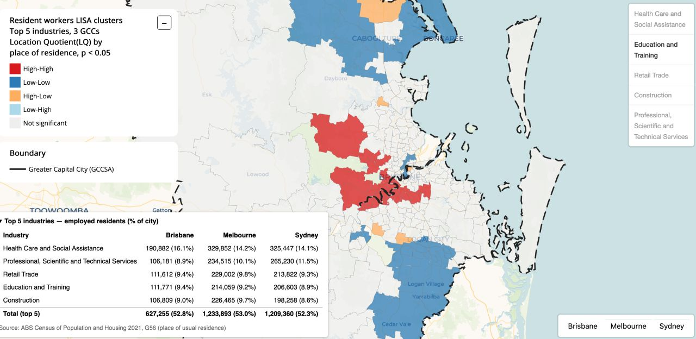
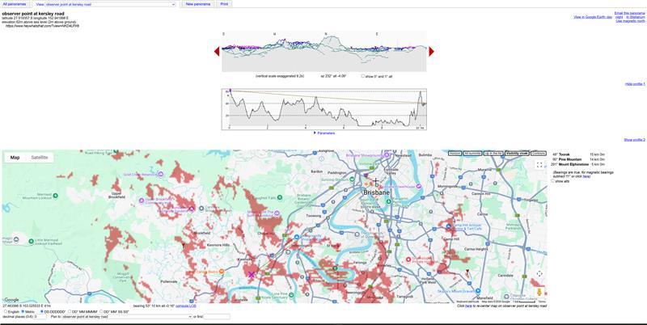
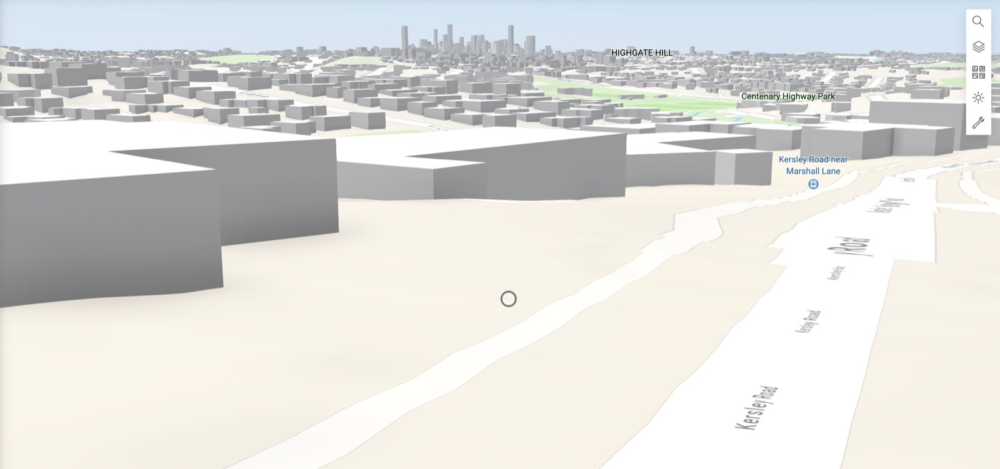
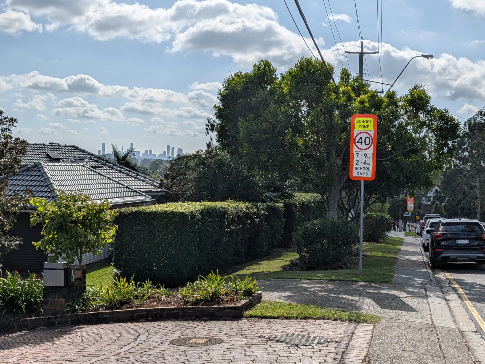
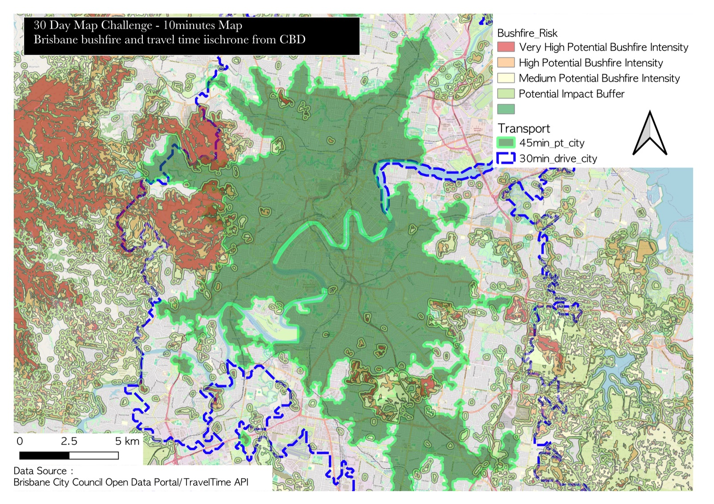

Day 1 · Points 📍
1 Nov 2026
2026 is a Census year in Australia, so I started with the smallest unit of census geography: the ABS Mesh Block.
I plotted all 374,803 Mesh Blocks (ASGS 2026) as centroid points, coloured by land use. Counting them and measuring their area tell two very different stories:
- 🏠 Residential Mesh Blocks are 66.4% of the count but cover only 0.4% of the land
- 🌾 Primary Production Mesh Blocks are 5.2% of the count but cover 76.8% of Australia
Mesh Blocks are designed to hold roughly similar numbers of dwellings, so they shrink where people live and stretch out where they don’t. By count, Australia looks residential. By area, it’s farmland and outback.

What I learned this time: keep the map lean
My first export of the interactive map was 250MB, too big to host. GitHub caps files at 100MB. Getting it down to 94MB meant cutting everything the map didn’t need: attributes nobody looks at, extra layers, and anything “nice to have” in the popup. Every column you keep gets copied 374,803 times.
The lesson: decide what the map has to say, and leave everything else out. A smaller file loads faster, and the message comes through more clearly.
Built in R with mapgl (MapLibre GL JS). I pulled the Mesh Blocks with abs.geo, a small helper package I wrote for getting ABS geographies. You can also download them straight from the ABS website or use the {strayr} package.
Day 2 · Lines ⛴️
2 Nov 2026
Growing up in Kaohsiung, my only ferry memory is riding my scooter onto the Cijin ferry (旗津渡輪). Sometimes I went across as a passenger instead.
That’s a little ironic. I’m Taiwanese, from an island surrounded by ocean, and I grew up in a harbour city, yet water transport barely featured in my life.
That changed when I worked at TomTom. In the map data I saw ferries of every kind: passenger ferries, vehicle ferries, river crossings, island links. So for Day 2, I mapped water transport routes across Australia.
What the map shows
Overture has 162 water transport routes in Australia, totalling about 4,690 km.
- 🌊 Queensland has the most routes: 61 routes and 666 km in total, mostly short island and reef hops along the coast.
- 🚢 The Northern Territory has only 6 routes, but they add up to 2,560 km, more than half the national total. These are long-haul barges serving remote communities. The longest, Darwin–Nhulunbuy–Groote Eylandt, is over 1,100 km by itself.
- ⛴️ Geelong–Devonport, the Spirit of Tasmania route, is the fifth longest at 449 km.
- 🏙️ NSW has 48 routes but only 74 km in total. Lots of short harbour and river crossings.
Like Mesh Block count versus area on Day 1, route count and route length tell different stories.

A note on data gaps
Open data isn’t complete. I couldn’t find some routes I know well, such as the Circular Quay to Watsons Bay ferry in Sydney, or the Dangar Island ferry on the Hawkesbury. Treat the map as a picture of what’s in Overture, not as a full ferry network. If you spot a missing route, it could be worth contributing it to OpenStreetMap, which feeds Overture.
How I made it
The data comes from the Overture Maps October 2026 release. I extracted the water routes for Australia with DuckDB and mapped them in R. DuckDB reads Overture’s GeoParquet files straight from the cloud, so you only download the part you need, not the whole planet.
My own ferry list
My own ferry list is still very short:
- 🚢 Sydney: the Parramatta RiverCat, the Manly fast ferry, and the Berowra Waters vehicle ferry, which I loved
- 🚢 Brisbane: the KittyCat and the RiverCat, plus the North Stradbroke Island ferry 12 years ago
- 🚢 Europe: Helsinki to Tallinn across the Baltic 12 years ago, and around 20 years ago the Danube river ferry from Linz to Passau and the ferry in Hallstatt
What’s your water transport story? Is there a ferry ride you still remember, or one on your list?
Day 3 · Polygons 🏞️
3 Nov 2026
My first snorkeling was in 2001, in Kenting National Park (墾丁國家公園) at the southern tip of Taiwan.

For Day 3, I’m going back home to map Taiwan’s administrative boundaries and national parks.
When I was young, Taiwan had only 6 national parks. Thirty years later there are 10: 9 national parks plus Shoushan National Nature Park. I’ve only been to a few of them: Taroko (太魯閣), Kenting (墾丁), Yangmingshan (陽明山) and Shoushan (壽山). I’d love to visit the rest.
What the map shows
🏙️ Taiwan’s three tiers of local government:
- Special municipalities (直轄市), e.g. Taipei and Kaohsiung
- Provincial cities (省轄市), e.g. Keelung, Hsinchu and Chiayi
- Counties (縣)
Special municipalities sit at the top. They get more budget and more autonomy, and they hold most of Taiwan’s population.
🌳 National parks drawn over the administrative map, so you can see which cities and counties each park sits in.

Data & tools
Boundaries come from OpenStreetMap and GADM. The OpenStreetMap boundary also covers the waters around Taiwan, not just the land, so it gives you a different view of what “Taiwan” looks like on a map.
Built in R with mapgl (MapLibre GL JS). Most legends can be collapsed and dragged around, so they don’t block the map.
Day 4 · Clustering 📊
4 Nov 2026
I'll be honest: spatial statistics is still an “advanced topic” for me.
I remember the terms from my urban planning courses at university: Moran's I, LISA, Location Quotient. One lecturer started with Central Place Theory and built up to spatial statistics step by step. I was very impressed, but I never felt I fully understood what these tools could do. I've always wanted to go back to them.
My master's thesis came close. I used the Geographical Analysis Machine (GAM) to find clusters in how researchers and residents perceived local characteristics. (My GAM result from back then is below.) Day 4 is my excuse to go back to spatial clustering properly.

What the map shows
How the top 5 industries cluster across Greater Sydney, Melbourne and Brisbane. Interestingly, all three cities have the same top 5 industries. Only the ranking differs.
I live in Brisbane's western suburbs, and I've often heard people say that a lot of academics live around Indooroopilly, St Lucia, The Gap, Ashgrove, Kenmore and Pullenvale. Now I can see the evidence. Education and Training workers cluster along the knowledge corridor, from the inner west out to the western and north-western suburbs.

Construction and Retail show a very different pattern. They cluster at the fringe of the fringe, on the outer edges of the city.
You can switch between cities and industries to see how each one clusters.
📌 Note: this is where employed residents live (place of usual residence), not where they work. So it shows where workers in each industry live, not where the jobs are.
Then vs now
Spatial clustering is much easier to do than it was 20 years ago. Back then, just getting the data was a challenge, and running many iterations and statistical tests took real effort. In 2026, the data comes straight from an API, and R packages handle the calculation, the testing and the mapping. That leaves us free to focus on interpreting the results.
So my question for you 👇
Do you know a real example where spatial clustering analysis actually shaped city planning policy? I'd love to hear that story. This kind of analysis takes a lot of effort, and I'd like to see it shape how cities develop in the future, not just describe what's already there.
Data & method
Data: ABS 2021 Census, employed residents by industry, at SA2 level within each Greater Capital City.
Method: Local Moran's I (LISA). It flags SA2s where high values sit next to other high values (hot spots), low values sit next to low (cold spots), and outliers that stand out from their neighbours.
Built in R with mapgl (MapLibre GL JS).
Day 5 · Sense – Sight 👀
7 Nov 2026
Can you see Brisbane's CBD from a street corner in Kenmore, about 10 km away? It depends on who you ask.
🏔️ The terrain says yes

I ran a viewshed from Kersley Road with HeyWhatsThat, with the observer height set to 2 m (62 m above sea level). The line of sight towards the CBD (bearing 53°, about 10 km) just clears the ridges in between. The red patches show everywhere the bare ground is visible from that spot.
🏙️ The 3D model says yes, mostly

Add buildings and the skyline is still there, sitting neatly above the rooftops of the western suburbs.
📷 My eyes say: just a little

The real photo has something both models leave out: trees. Hedges, gum trees and power lines hide most of the view. All that's left is a thin strip of towers peeking over a neighbour's roof.
Takeaway
Each layer adds another set of obstacles, and the view gets smaller each time. Sight analysis is only as good as what you put into the model. Terrain is easy, buildings are getting easier, but vegetation is still the missing layer in most digital twins.
Do you have a spot where you can see the city skyline, maybe from home or on your commute? 👇
Data & tools
- Viewshed: HeyWhatsThat, observer at Kersley Road, Kenmore, 2 m above ground.
- 3D view: Mapbox 3D buildings and terrain.
- Photo: taken on Kersley Road, Kenmore.
Day 7 · 10-Minute Map ⏱️
9 Nov 2026
Playing catch-up: this is Day 7, posted two days late. Luckily, it’s a 10-minute map 😅
I dug into my archive and opened the QGIS project I used for house hunting when I first moved to Brisbane three years ago. The data was all still there, so the work today was choosing what to leave out.
I turned off most of the layers and kept just two themes:
- 🔥 Bushfire risk (Brisbane City Council open data)
- 🚆 Travel time from the CBD: 45 minutes by public transport and 30 minutes by car (TravelTime API)

Why bushfire, not flood?
In Brisbane, everyone talks about flood risk. Bushfire risk hardly comes up. At one house inspection, I asked the agent about it. He told me that in his whole career selling in Brisbane, no one had ever asked him about bushfire risk.
I found that funny, and a bit surprising. So that’s the risk I chose to map.
Look at the west of the map. Most of the very high bushfire risk sits right at the edge of the 45-minute public transport zone, where the suburbs meet the bush. Many people want to live in these leafy, quieter suburbs, and the bushfire risk comes with them.
Then vs now
Back then, I was working fully from home, so travel time to the CBD didn’t matter much to me. Now it does. My commute to the city sits right around that 35–45 minute public transport mark, so the green zone on this map has become very real.
Funny how data you collected for one decision becomes relevant again years later.
Did you check bushfire or flood risk when you bought or rented your home?
Data & tools
Data: Brisbane City Council Open Data Portal and the TravelTime API, both collected three years ago. Made in QGIS.
More days to come. Every 2026 map is listed in my full portfolio, and the code is on GitHub.